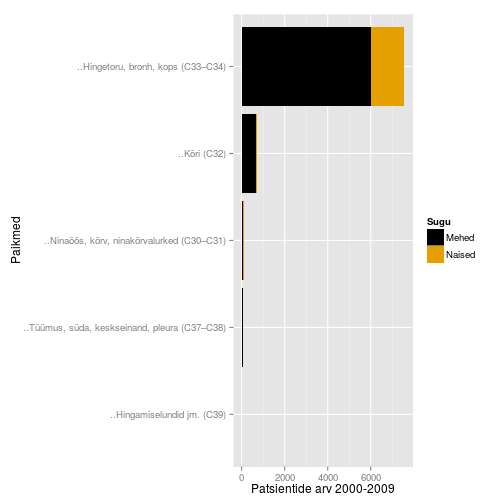

Onkobioloogia
Vähkkasvajate molekulaarsed mehhanismid
Taavi Päll
lektor, Tallinna Tehnikaülikool
Sissejuhatuseks
Vähk
- Mõiste vähk (tuumor, pahaloomuline kasvaja, neoplasm) tähistab suurt hulka erinevaid haiguseid (NCI ~160 olulisemat) mis võivad tekkida kõigis keha kudedes.
- Vähi tunnuseks on ebanormaalsete rakkude kasv koes väljapoole nende normaalseid piire. Kõrvalolevate kudede invasioon ja levik teistesse organitesse ehk metastaseerumine.
- Metastaasid on ka enamuse kasvajatest tingitud surmade põhjustajaks.
Vähk võib lõppeda surmaga
- Vähkkasvajad on maailmas üks juhtivatest surma põhjustatavatest haigustest, nõudes 8.2 miljonit elu 2012. a (EU-27 osakaal 2012: 1.27 miljonit (15%))
- Kopsu-, maksa-, mao-, kolorektaal- ja rinnakasvajad põhjustavad enim vähisurmasid
- sagedasemad vähitüübid on naistel ja meestel erinevad
- ennustatkse, et haigestumus suureneb maailmas 14 miljonilt 2012.a 22 miljonini 2030-ndatel
Kõige sagedasemad surmaga lõppevad vähid maailmas, 2012 aasta seis:
- 5. kops (1.59M surma)
- maks (745 000)
- magu (723 000)
- kolorektaal (694 000)
- rinnavähk (521 000)
- söögitoru (400 000)
Võrdluseks:
- 1. südame isheemia (7.4M)
- 2. insult (6.7M)
- 3-4. COPD ja alumiste hingamisteede infektsioonid (a 3.1M)
Vähiriski mõjutab elustiil
Vähirisk
- ~30% vähisurmadest on tingitud viiest käitumis ja dieediriskist:
- kõrge BMI,
- vähe puu- ja aedvilju menüüs,
- vähene füüsiline aktiivsus,
- tubakas/suitsetamine,
- alkohol
- arengumaades põhjustavad 20% vähkidest hepatiidi viirused B ja C ning papilloomiviirused
Ülekaalulisus ja vähk
- Ülekaalulisus ja rasvumine on maailmas kasvav probleem.
- Ülekaalulisus ja rasvumine suurendab vähiriski mitmete vähitüüpide puhul: rinna-, soole-, neeru-, endomeetriumi-, söögitoru- ja pankrease vähk.
- Vähiteraapias on ülekaalulisus ja rasvumine seotud suurenenud vähi tagasi tuleku ja surma riskiga.
- Füüsiline aktiivsus ja tervislik toit vähendavad riski oluliselt.

Suitsetamise tõus arengumaades
- Üle 1.3 miljardi inimese suitsetab maailmas tubakat. Suitsetamine põhjustab erinevaid kasvajaid ja vastutab 1/5 vähisurmade eest maailmas.
- Lähis-Idas ja Aafrikas on ajavahemikus 1990-2009 sigarettide tarbimine suurenenud 57%.
- Kuigi keskeas suitsetamise maha jätmine vähendab üle 60% kopsuvähi riski, teevad arengumaades seda vähesed.
- Sigarettide maksustamises nähakse vastumeedet, kuid sissetulekud tõusevad kiiremini kui maksud.

Erinevused 5-aasta elulemuses maailmas

Diagnostika ja teraapia kättesaadavus
- Tingituna piiratud juurdepääsust diagnostikale ja ravile on madala ja keskmise sissetulekuga maades vähisurmade suhe intsidentsi umbes 20% kõrgem kui arenenud maades.
- Piiratud juurdepääs on tingitud nii kõrgest hinnast, ebapiisavast infrastruktuurist kui personali puudusest.
- Radioteraapia on näidustatud umbes 60% vähipatsientidest, siiski pole see kättesaadav arengumaades elavatele 82% maailma rahvastikule.
30 Aafrika ja Kagu-Aasia riigis puudub radioteraapia teenus täielikult

Eesti
Kasvajatesse haigestumus Eestis

Andmed: TAI vähiregister
Kasvajad Eestis paikmete kaupa

Andmed: TAI vähiregister
Sagedasemad paikmed

Seedelundkond

Rindkere

Esmased vähid ja 5 aasta suremus
Sõltuvalt vähitüübist võib elulemus varieeruda 10% kuni 90%

Pilt: Marshall, 2011.
Vähiravi/teraapiad
- kirurgia
- kemoteraapia
- kiiritusravi
- hormoonteraapia
- märklaud teraapiad
- immuunteraapia
Vähiravimid
Top 10 best-sellerit vähiravimite hulgas 2013 (maailmas):
| Bränd | näidustus | globaalne müük | firma (aktsia) |
|---|---|---|---|
| Rituxan/MabThera | non-Hodgkin's lymphoma, CLL | $7.78 billion | Roche (RHHBY34.16-1.98%) |
| Avastin | Colorectal, lung, ovarian and brain cancer | $6.75 billion | Roche |
| Herceptin | Breast, esophagus and stomach cancer | $6.56 billion | Roche |
| Gleevec | Leukemia, GI cancer | $4.69 billion | Novartis (NVS98.35-0.29%) |
| Alimta | Lung cancer | $2.7 billion | Eli Lilly (LLY83.19-0.66%) |
| Velcade | Multiple myeloma | $2.6 billion | Takeda, J&J (JNJ95.17-1.09%) |
| Erbitux | Colon and head and neck cancer | $1.87 billion | Merck, BMS (BMS42.93+0.61%) |
| Lupron, Eligard | Prostate and ovarian cancer | $1.73 billion | AbbVie, Takeda; Sanofi, Astellas |
| Zytiga | Prostate cancer | $1.7 billion | J&J |
| Revlimid | Multiple myeloma, mantle cell lymphoma | $1.09 billion | Celgene (CELG124.04+0.81%) |
Kursus
Kursuse eesmärk
- selgitada vähkkasvajate tekke molekulaarseid ja rakulisi mehhanisme
Raamat
- Robert A. Weinberg
The Biology of Cancer
New York, Garland Science, 2007
Kohaviit: 616/W-46